The look
A white page and navy type. One huge, wide title that ends in a green check-mark. The aurora, drawn sharp. Few words and a lot of white.
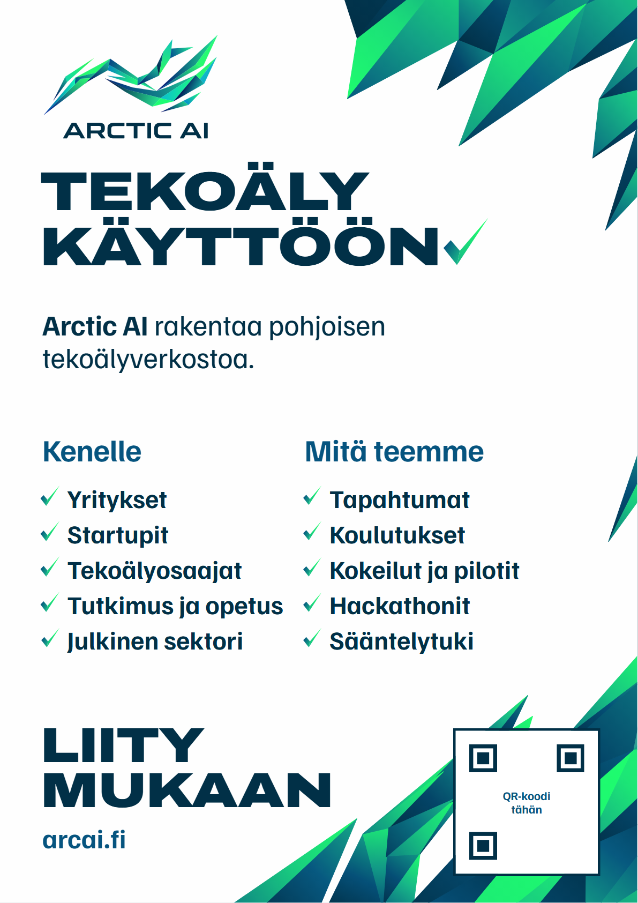
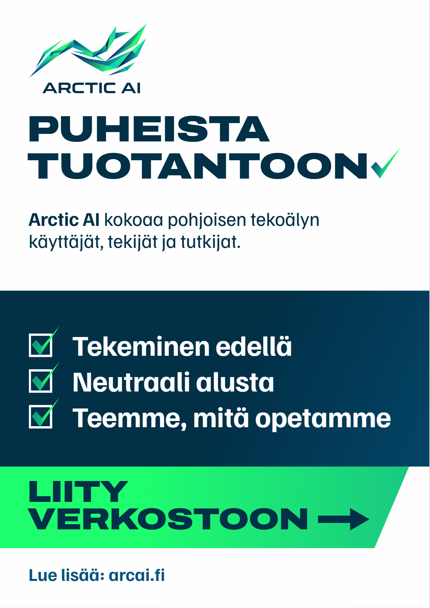
What makes it Arctic AI
- White ground, navy type. Calm and legible before anything else.
- The title. Archivo at its heaviest and widest, in capitals. It does most of the visual work.
- The check-mark. Two gradient facets. It ends the title and ticks the lists. It means done.
- The aurora, drawn sharp. Facets in the logo's colours, pointing up and to the right. On screens, soft veils of the same light drift behind the page.
- Green for action. Where we ask you to do something, it is green.
Use one look per piece. When two pieces sit side by side, use one of each. Documents, and pieces built around a photo, use neither: there the gradient line carries the brand.
Logo
An aurora built from sharp facets, above the wordmark. Always use the files. Never redraw it, and never retype the wordmark.
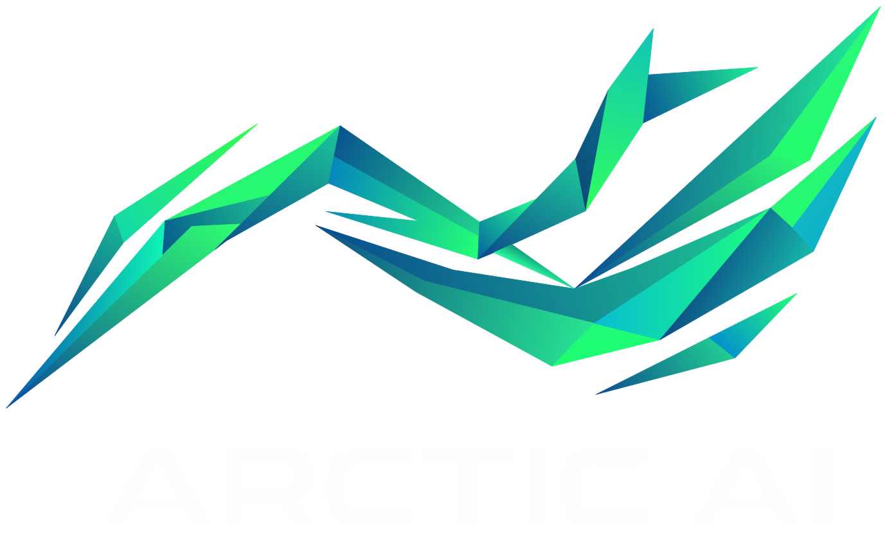
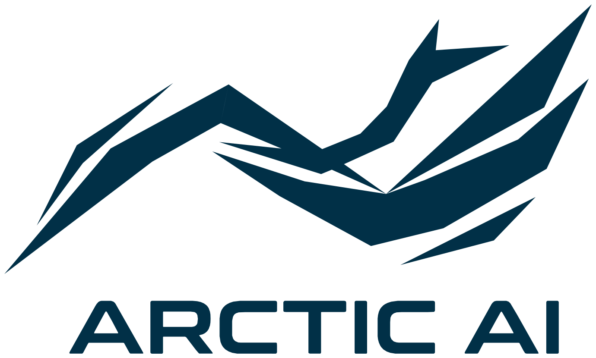
Clear space and size
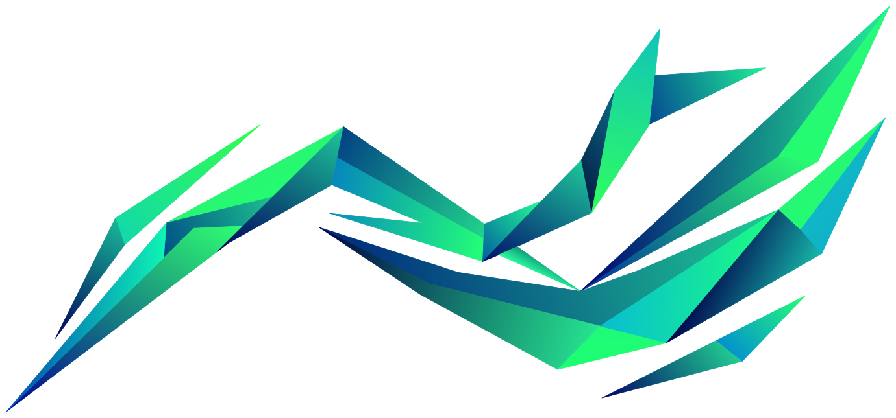
Placement
- Top-left corner, on the left margin. That is where it sits on every piece.
- About 28% of the width on portrait and square formats (58 mm on A4), about 21% on landscape.
- One logo per piece.
Not like this
The brightest green in the symbol is outside what printers can reproduce. On paper it prints slightly duller than on screen. That is expected.
Colour
Five colours and nothing else. There is no black and no grey: navy does that work.
Navy
- HEX
- #013047
- RGB
- 1 48 71
- CMYK
- 99 32 0 72
All text, the wordmark, navy bands, arrows.
Blue
- HEX
- #06547F
- RGB
- 6 84 127
- CMYK
- 95 34 0 50
Sub-headings, links, web addresses.
Teal
- HEX
- #17B588
- RGB
- 23 181 136
- CMYK
- 87 0 25 29
The middle of gradients. Graphics only.
Flare green
- HEX
- #1EFD6E
- RGB
- 30 253 110
- CMYK
- 88 0 57 1
The bright end of gradients. The call to action.
White
- HEX
- #FEFEFE
- RGB
- 254 254 254
- CMYK
- 0 0 0 0
The ground of every layout. Text on navy.
How much of each
White 60–75%, navy 15–25%, gradients and green 10–15%. If a layout feels dark or busy, it needs more white.
Text and background
The numbers are contrast ratios. Text needs at least 4.5 : 1.
Gradients
Gradients are how the aurora shows up. They always run between neighbours in this order: navy, blue, teal, flare green.
- Keep backgrounds white. Navy and green appear as bands.
- Use linear gradients between neighbouring colours.
- In print, expect flare green to look duller than on screen.
- No black, grey, purple or extra accent colours.
- No full pages of navy or green, and no tinted backgrounds.
- No gradients on text, no radial glows, no rainbow blends.
Typography
Two typefaces, both free on Google Fonts. Archivo shouts the title. Familjen Grotesk says everything else.
Archivo, for the largest titles
Puheista
tuotantoon
- Archivo (Omnibus-Type), the variable version: weight 900, width 125%, in capitals. As a static font it is called Archivo Expanded Black.
- Line height 0.9, letter-spacing −1.2%, navy, left-aligned.
- Two to four words on one to three lines. Break lines by meaning, and never split a word.
- Finnish words are long. A ten-letter word such as TUOTANTOON is set a step smaller (51 pt on A4 instead of 66), and that is normal.
- It ends with the check-mark in place of a full stop. The mark's lower tip sits on the baseline.
Tekoäly käyttöön
Tekoäly käyttöön
Familjen Grotesk, for everything else
Tuo oma kysymys400 Regular: body text
Neutraali alusta500 Medium: navigation, captions
Tekeminen edellä600 Semibold: headings, buttons
Liity verkostoon700 Bold: lists, names, links
Sub-headings, body text, lists, navigation, buttons and captions. Sentence case. Sub-headings and links are blue; everything else is navy.
Sizes
Sizes are set against the width of the piece, so the same proportions work on a poster and a phone. The unit u is 1% of the width (0.75% on landscape formats).
| Style | Typeface | Size | On A4 | On a 1080 px post |
|---|---|---|---|---|
| Title, short words | Archivo 900, 125% | 11u | 66 pt | 119 px |
| Title, long words | Archivo 900, 125% | 8.6u | 51 pt | 93 px |
| Call to action | Archivo 900, 125% | 7.4–8.4u | 44–50 pt | 80–90 px |
| List on the navy band | Familjen Grotesk 700 | 7.7u | 46 pt | 83 px |
| Heading | Familjen Grotesk 700, blue | 4.9u | 29 pt | 53 px |
| Lead sentence | Familjen Grotesk 400 | 4.5u | 27 pt | 49 px |
| Link, web address | Familjen Grotesk 700, blue | 4.2u | 25 pt | 45 px |
| List | Familjen Grotesk 700 | 4u | 24 pt | 43 px |
Nothing on a poster or a social image is smaller than 4u. If the text only fits when it is smaller, there is too much text.
- Left-align everything on one margin.
- Make headings clearly larger than the list below them.
- On web pages use Archivo for the page title only.
- No third typeface, no italics, no capitals in Familjen Grotesk.
- No body text or long sentences in Archivo.
- No centred text, and no stretching type to fake the wide title.
Check-mark
Two gradient facets. It means done: decided, working, in use. It is the brand's punctuation.
- Short arm: blue to teal.
- Long arm: teal to flare green, shooting up and to the right.
- The two arms are separate facets, like the logo. It is never one flat colour.
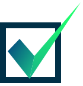
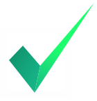
Three uses
- Ending the title, in place of a full stop. One per piece.
- List bullets, like the ones on this page.
- Ticked boxes in the large list on a navy band. The mark is bigger than its box and shoots out of the corner. That overshoot is the point.
- No emoji or font ticks in its place.
- Not recoloured, flattened, rotated, mirrored or put in a circle.
- Not scattered around as decoration.
Graphic elements
Everything Arctic AI draws is sharp-edged and coloured from the gradients. The one soft thing is the aurora on screens.
Facets
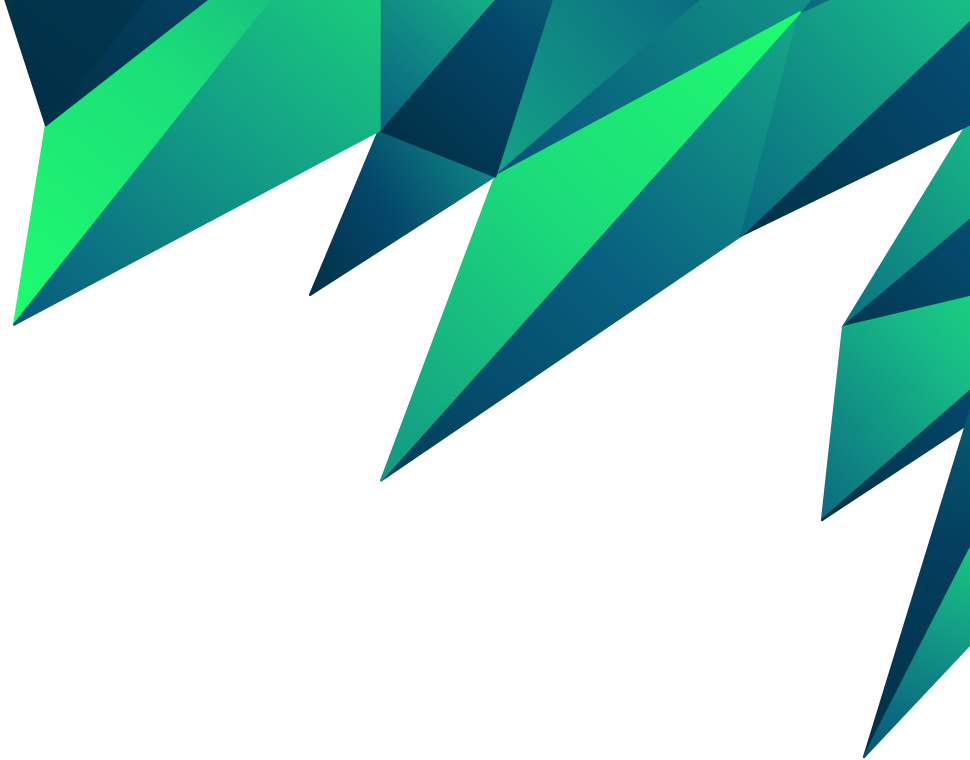
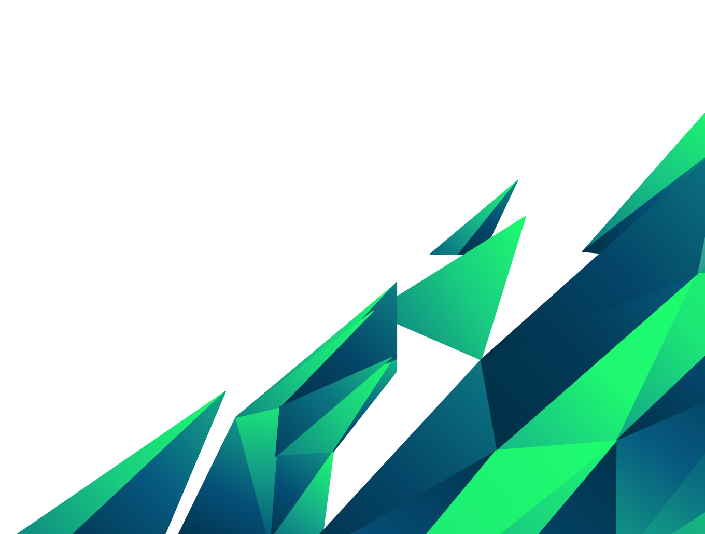
Up and to the right, about 40°- Use the facet files. They were shaped by hand; new ones will not match.
- Keep them in the corners, at least one margin away from any text.
- Scale and crop only.
- No facets under text or under the logo.
- No rotating or mirroring: mirrored, they point the wrong way.
- No outline-only triangles, wireframes, blur or transparency.
Bands and the arrow
- Tekeminen edellä
- Neutraali alusta
- Teemme, mitä opetamme
Liity verkostoon
- One navy band and one green band per piece, at most.
- The green band is the only large area of flare green.
- The slant is fixed: the bottom corner sits 0.425 × the band's height to the left of the top corner.
The gradient line
A thin line from blue to flare green. It marks the top edge of something: a screen, the content of a document, an image. It belongs on the quiet pieces that have no facets and no bands.
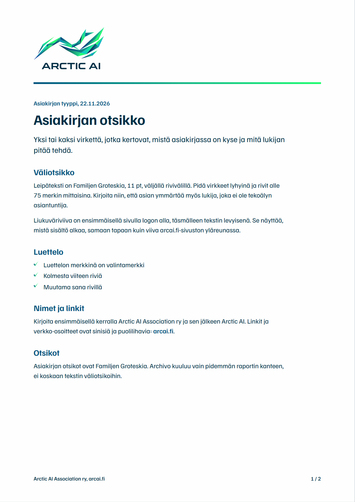
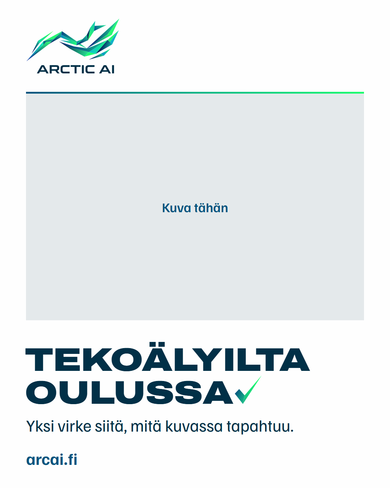
- Also: the very top of a screen (website, slides, landscape video), and the top edge of name badges, certificates and membership cards.
- Direction: always horizontal, blue on the left, flare green on the right.
- Width: the full width of the thing it sits on.
- Thickness: 4 px on a web page. In print 1 mm on A4 and smaller, 1.5 mm on A3.
- One per page. Several images in a row share one line.
- Not on a piece that already has facets or bands.
- Not as a divider across a layout, and not under headings or words.
- Not on navy: the blue end disappears.
- Not at the very edge of the paper on a home printer. Keep it inside the margins.
QR tile
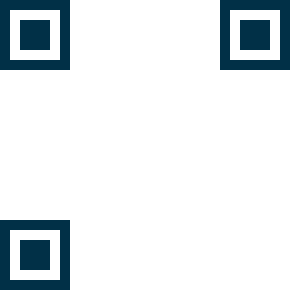
Layout
Everything hangs on one left margin. The right side belongs to graphics and white space.
- Reading order, top to bottom: logo, title, one sentence, a short list, the call to action.
- Margin: 6.7% of the width (14 mm on A4, 72 px on a 1080 px post).
- Logo: top-left, 27.6% of the width.
- Title: 11% of the width, starting two wordmark-letter heights below the logo.
- Action: bottom-left. Graphics or a QR tile: bottom-right.
How much text
| Element | Limit |
|---|---|
| Title | 2–4 words on 1–3 lines |
| Lead | 1–2 sentences, 16 words at most |
| List | 3–5 lines, 2–4 words each; two lists at most |
| List on the navy band | 3 lines, 2–3 words each |
| Call to action | 2–3 words |
A poster has to work from two metres away. If the content does not fit, shorten the text. Do not make it smaller.
Social formats
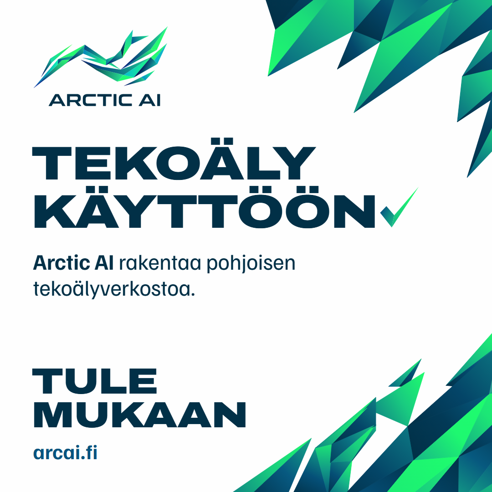
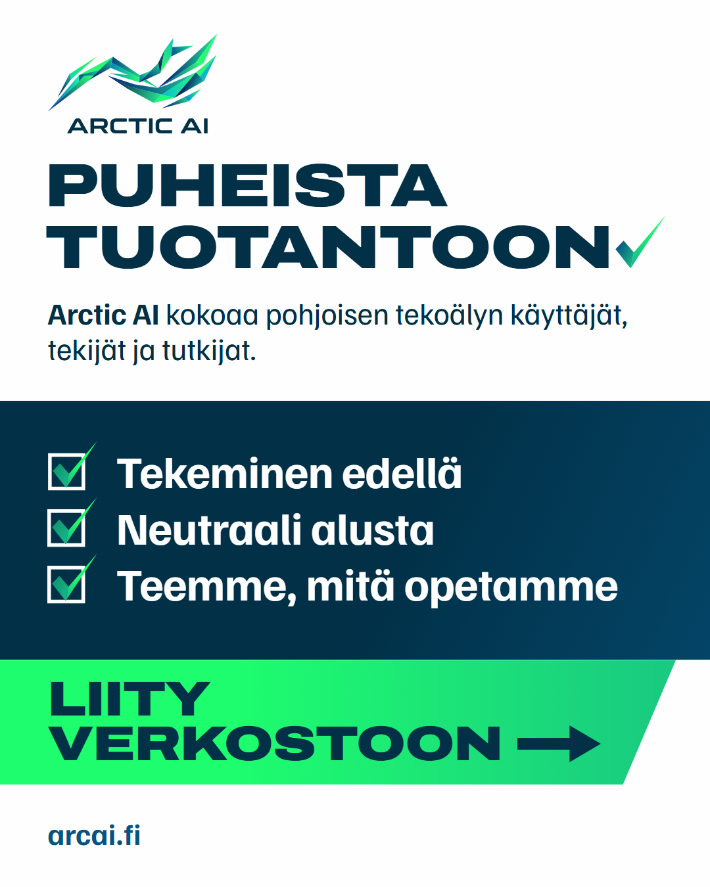
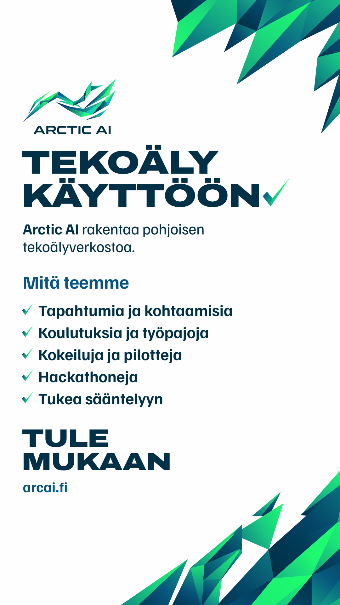
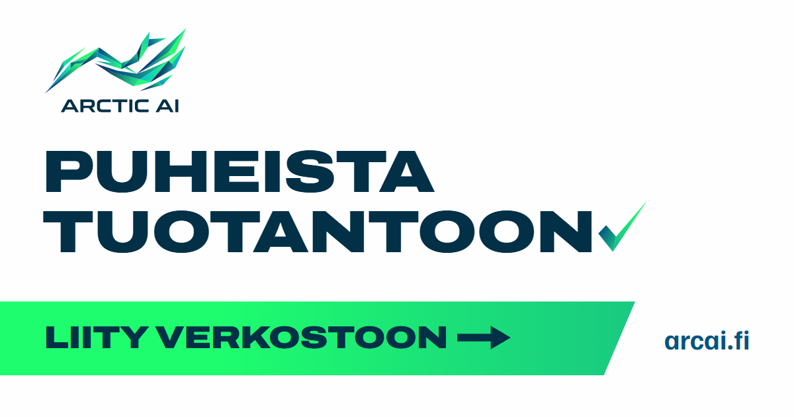
These four are starter templates derived from the two A4 layouts. Each exists in Finnish and in English. Always write alt text that repeats the words in the image.
Documents
- A4 with 20 mm margins. Logo top-left, the gradient line under it, then the text.
- Title and headings in Familjen Grotesk; headings are blue. Body text 11 pt.
- Lists use the check-mark. Tables have thin navy rules and no filled cells.
- Archivo only on the cover of a longer report.
- Home and office printers: no bleed. Keep logo and text at least 9 mm from the paper edge.
- Print PDFs at 100%, not "fit to page".
- One navy band and one green band are fine; avoid other large solid areas.
- For a print shop: add 3 mm bleed and use the CMYK values.
Motion
Two speeds and nothing in between. The aurora drifts. Everything sharp snaps into place, then holds still.
Puheista
tuotantoon
Arctic AI rakentaa pohjoisen tekoälyverkostoa.
Liity verkostoon
arcai.fi
Drift
The aurora: three soft veils of green, teal and blue light on white, behind the top of the page. It moves slowly and never stops; one sway takes 30 to 50 seconds. It is the animated background of arcai.fi and the only soft element in the brand.
Snap
Titles, check-marks, bands and facets arrive fast and land softly, once, in reading order. Then nothing moves except the aurora.
| Move | What happens | Time |
|---|---|---|
| Title rises | Each line rises from behind its own baseline | 0.7 s |
| Check-mark strikes | Drawn left to right, just after the title lands | 0.4 s |
| Band wipes in | The navy band opens from the left edge | 0.7 s |
| Boxes are ticked | List rows arrive and are ticked one by one | 0.25 s apart |
| Green band slides in | From the left, slanted end leading; the arrow nudges | 0.7 s |
| Facets crystallise | Each facet settles, spreading out from its corner | 0.5 s each |
| Gradient line draws | Grows across the top from the left | 0.9 s |
Sample videos
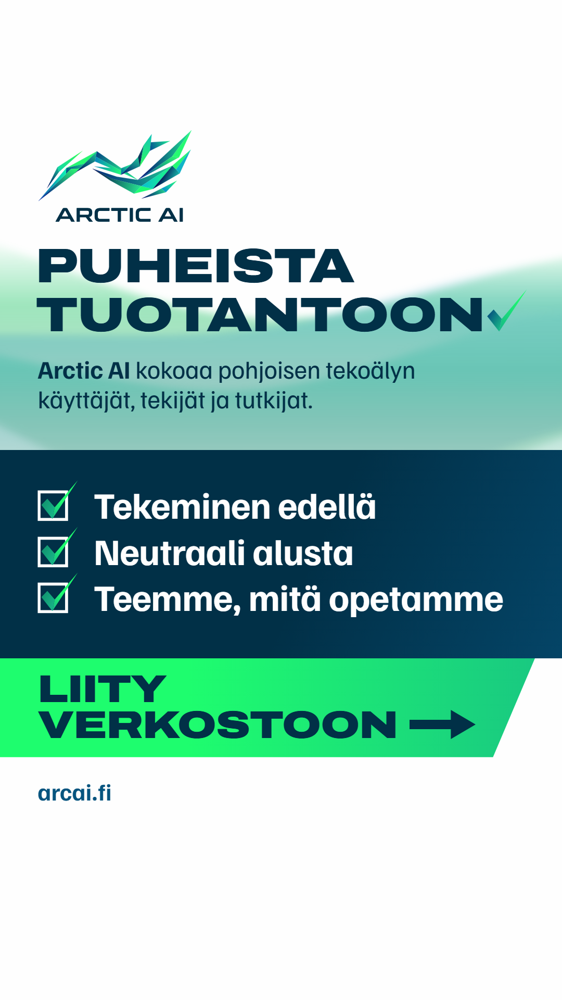
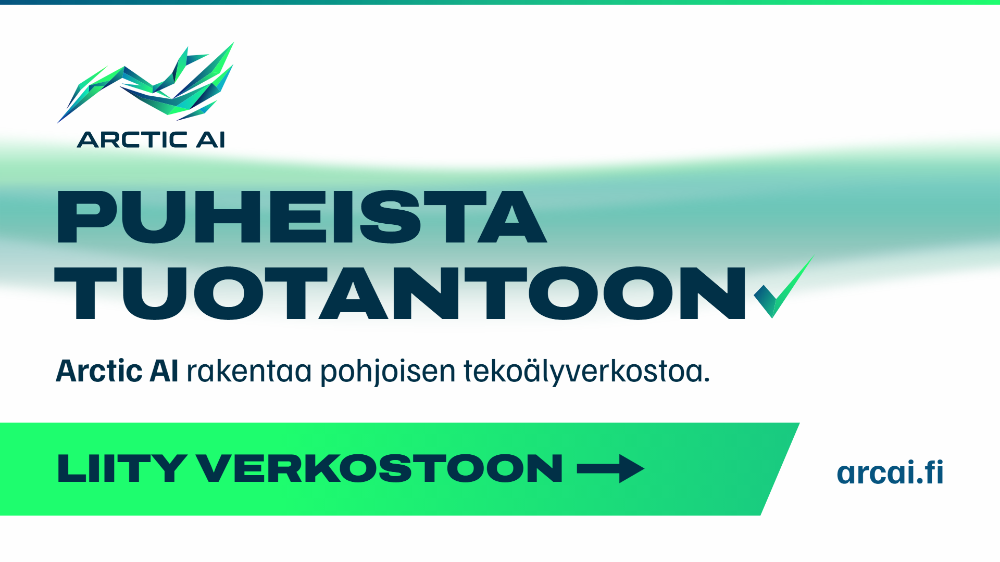
- Start and end on white with the logo. Loops have no jump.
- Things rise, or move left to right, toward the upper right.
- Hold the finished layout for at least 2.5 seconds.
- Make every video work without sound.
- No bouncing, spinning, shaking or pulsing.
- No glows, sparkles, light sweeps or particles.
- No dark frames, no fades through black, no night sky.
- No animating the logo's facets, and no letter-by-letter text.
Buttons
One button, and only where it can be clicked. The gradient line sits under it; reach for it and the line rises and floods it green.
Buttons belong on web pages, in email and in apps. They are never drawn in print, in a social image or in a video, because nothing there can be clicked. Those use the green band or a plain call to action.
States
- Shape: a rectangle with square corners, 48 px high or more.
- Label: Familjen Grotesk 600, sentence case, one to three words that say what happens: "Liity verkostoon", "Hae jäsenyyttä", "Ilmoittaudu".
- Line: 4 px along the bottom edge, blue to teal to flare.
- One primary button per view. A secondary may sit beside it.
- Web pages, email and apps: the button.
- Posters and flyers: the green band, or a call to action with a QR code.
- Social images and video: the green band, or a call to action with arcai.fi below it.
- No buttons in print, social images or video.
- No rounded corners, pills, shadows or glows.
- No green button at rest: green is the answer to hover.
Name and voice
Arctic AI sounds like a capable colleague from Oulu telling you what works: plain, concrete, a little dry, and never selling.
Who we are
Arctic AI Association ry rakentaa pohjoisen tekoälyverkostoa. Tuomme saman pöydän ääreen Pohjois-Suomen yritykset, osaajat, tutkimuksen ja julkisen sektorin, jotta tekoäly siirtyy puheista käyttöön. Olemme riippumaton yhdistys: emme myy mitään emmekä aja kenenkään tuotetta. Tavoitteemme: Oulusta Pohjolan tekoälykeskus.
Arctic AI Association ry is building the AI network of Northern Finland. We bring the region's companies, practitioners, researchers and public sector to the same table, so that AI moves from talk into use. We are an independent association: we sell nothing and promote no one's product. Our goal: Oulu as the AI centre of the North.
| Finnish | English | |
|---|---|---|
| Promise | Viemme tekoälyn puheista tuotantoon. | We take AI from talk to production. |
| Vision | Oulusta Pohjolan tekoälykeskus. | Oulu as the AI centre of the North. |
| What we stand on | Tekeminen edellä. Neutraali alusta. Teemme, mitä opetamme. | Doing comes first. Neutral ground. We do what we teach. |
| What we do | Tapahtumia ja kohtaamisia, koulutuksia ja työpajoja, kokeiluja ja pilotteja, tukea sääntelyyn. | Events and meetups, training and workshops, experiments and pilots, help with regulation. |
| For whom | Ensin yritykset ja muut organisaatiot ja niiden ihmiset. Kaikki tekoälystä kiinnostuneet ovat tervetulleita. | First of all companies and other organisations, and the people in them. Everyone interested in AI is welcome. |
Five habits
- Done before planned. Lead with something that exists or happens: a demo, a date, a result, a question. Verbs and nouns, few adjectives.
- Straight. Short sentences. No superlatives, no exclamation marks, no consultant vocabulary.
- A peer, not a vendor. We invite and connect. We sell nothing and recommend no one's product.
- Honest about what exists. We are new and say so. Plans are called plans. Nothing unconfirmed is claimed.
- From the North, without the postcard. The North is its industries, distances and people. The aurora stays in the visuals.
Like this, not like this
- Toimivia demoja, käytännön koulutus ja sauna. Ei kalvosulkeisia.Working demos, hands-on training and a sauna. No slide marathons.
- Tuo oma kysymys. Katsotaan yhdessä, kuka on ratkonut samaa.Bring your question. We will find who has solved the same thing.
- Ensimmäinen työpaja on [päivämäärä]. Seuraavien aiheet päätetään osallistujien kanssa.The first workshop is on [date]. The next topics are decided with the participants.
- Ainutlaatuinen tilaisuus verkostoitua alan huippuosaajien kanssa!A unique opportunity to network with top experts!
- Tarjoamme yrityksellesi räätälöityjä tekoälyratkaisuja.We offer tailored AI solutions for your business.
- Revontulten alla syntyy tulevaisuuden innovaatioita.Under the northern lights, the innovations of the future are born.
Headlines and calls to action
Two to four words: a plain fact or an invitation. No questions, puns or exclamation marks in a title.
| Finnish | English | Use |
|---|---|---|
| Puheista tuotantoon | From talk to production | The main title |
| Tekoäly käyttöön | Put AI to work | Title |
| Tuo oma kysymys | Bring your question | Title, events |
| Tehty pohjoisessa | Made in the North | Title, showing members' work |
| Liity verkostoon | Join the network | Call to action |
| Tule mukaan | Join us | Call to action |
| Hae jäsenyyttä | Apply for membership | Call to action, membership |
| Ilmoittaudu | Sign up | Call to action, events |
Words
- tekoäly, käyttöön, kokeilu, pilotti, demo, työpaja, verkosto, osaaja, pohjoinen
- AI, in use, trial, pilot, demo, workshop, network, practitioner, the North
- In Finnish text it is "tekoäly". "AI" appears in names only: Arctic AI, AI Act.
- Finnish says "sinä" to the reader. The association is "me".
- mullistava, ainutlaatuinen, huippu-, innovaatioekosysteemi, synergia, murros
- revolutionary, cutting-edge, unlock, empower, ecosystem, synergy, journey
- Dates, partners, numbers or results that nobody has confirmed.
- Two languages in one layout.
The name
| Write | When |
|---|---|
| Arctic AI Association ry | The first mention in any piece, and in formal contexts |
| Arctic AI | Every mention after that; headlines; social media |
| arcai.fi | The website, in lower case, without https or www. "ARCAI" is not the name |
Campaigns
A campaign may speak to its own audience in its own words, while the look stays exactly the same. These two sheets were made for a volunteer fair in 2026 and are written in simple English for international residents. Their wording belongs to that campaign; it is not the association's general message.
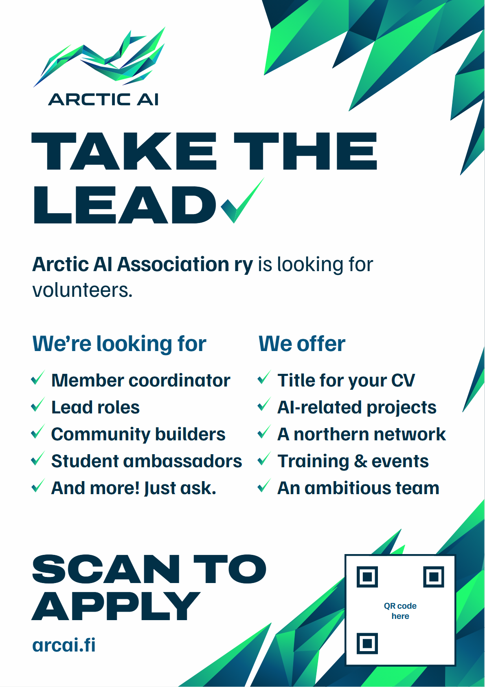
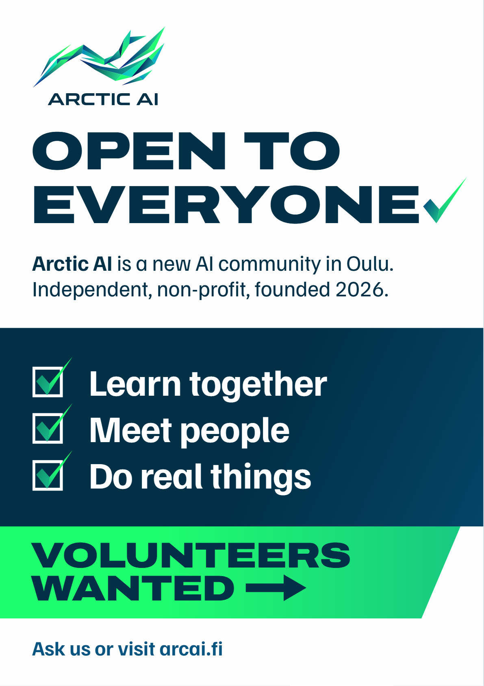
Checklist
Before anything goes out.
- The logo is the original file, top-left, unstretched, on white.
- Every colour is one of the five. The background is white.
- The title is Archivo 900 at width 125%, in capitals, and ends with the check-mark.
- Everything else is Familjen Grotesk. Text is navy, or blue for sub-headings and links.
- Nothing is rounded, shadowed or glowing. No night sky.
- Facets sit in the corners, away from the text. One look per piece.
- One call to action. In print, images and video it is never a button.
- A gradient line, if there is one, sits on the top edge of the content or of an image, on a piece without facets or bands.
- The whole message can be read in three seconds.
- The text is plain and concrete: no hype, no sales talk, no exclamation marks.
- Every fact is confirmed, and the piece is in one language.
- No placeholders are left: QR code, links, dates.
Files
Everything in the downloads folder next to this guide.
Logo
- arctic-ai-logo.svgDefault, for white backgrounds
- arctic-ai-logo-negative.svgFor navy backgrounds
- arctic-ai-logo-navy.svgOne colour, navy
- arctic-ai-logo-white.svgOne colour, white
- arctic-ai-symbol.svgSymbol only, for square spaces
- png/arctic-ai-logo.png3000 px wide, transparent. Also negative, navy and white


Elements
- check-mark.svgOn white
- check-mark-on-navy.svgOn navy
- check-mark-boxed.svgTicked box on white
- check-mark-boxed-on-navy.svgTicked box on navy
- arrow.svgNavy. Also arrow-white.svg
- gradient-line.svgThe gradient line as a vector
- gradient-line.pngFor Google Docs, Word and Canva: 1 mm high when placed 182 mm wide
- facets-top-right.svgFacet cluster for the top-right corner
- facets-bottom-right.svgFacet cluster for the bottom-right corner
- facets-right-edge.svgSingle shard for the right edge
- facets-a4-full.svgThe whole A4 facet layer


Fonts
- Archivo on Google FontsTitles: weight 900, width 125% (Archivo Expanded Black)
- Familjen Grotesk on Google FontsEverything else: 400–700
Making things with AI
Templates, animation tools and the same rules written for AI assistants are in the arcai-ai-design-system folder. Point an assistant at its AGENTS.md file and ask for what you need.